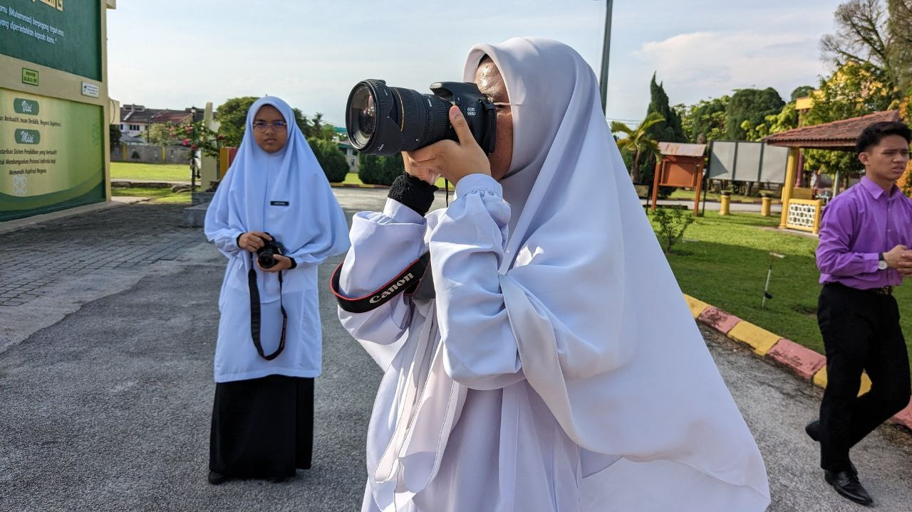
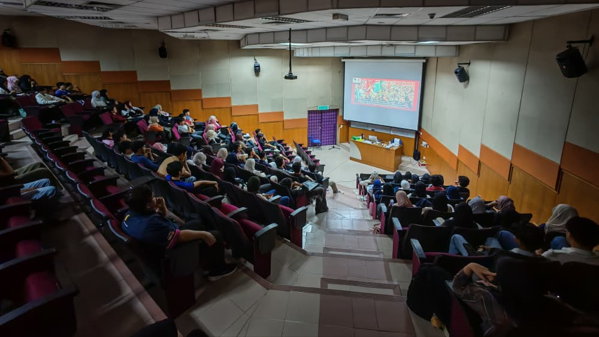

NGO involvement
Production Manager Assistant · Nuvista Media
Role summary
- Supported the Production Manager in coordinating activities for Nuvista Media, especially Layar Liar under RASMA.
- Assisted production planning, script generation, scheduling, communication and hybrid production activities.
- Worked with team members to complete tasks according to project requirements and timelines.
- Gained practical experience in media production and project operations, strengthening organisation, communication, time management, teamwork and problem solving.
Moments


